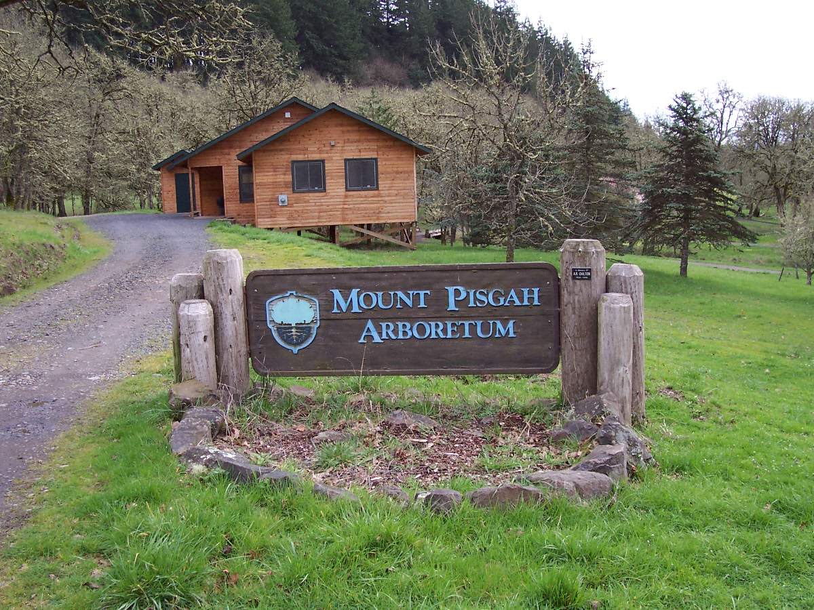
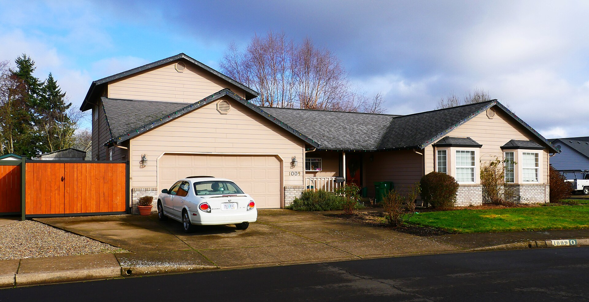

How to Buy a House in Lane County, Oregon
The whole process from first lender call to keys in hand, in the order it actually happens, with the Lane County specifics nobody tells you.
Read the guide →Written out, free, no email required. Informed clients make better decisions and are more pleasant to work with, so this is entirely self-interested.
The whole process from first lender call to keys in hand, in the order it actually happens, with the Lane County specifics nobody tells you.
Read the guide →
What to fix, what to skip, how pricing actually works, and why the first ten days on the market decide most of what happens after.
Read the guide →
The state and local programs that help first-time buyers get in, what they generally require, and how to find out in one phone call whether you qualify.
Read the guide →
The four things that decide whether a piece of country property is a dream or an expensive lesson, and how to check all of them before you are committed.
Read the guide →
Why country property sells differently, what to gather before you list, and the prep that pays for itself several times over.
Read the guide →
How wells and septic systems actually work, what to inspect, what maintenance costs, and the questions to ask before you buy a property on either.
Read the guide →
What Springfield is really like to live in, how it differs from Eugene, where the areas are, and what to know before you commit to the move.
Read the guide →
Why your tax bill is not based on what you paid, how assessed value differs from market value, and what that means when you buy.
Read the guide →
How to read an inspection report without panicking, which findings are real money, and the extra inspections worth paying for in Lane County.
Read the guide →
A practical comparison of the places people actually choose between, from in-town Springfield to acreage out east, and who each one really suits.
Read the guide →How USDA Rural Development financing works, which parts of Lane County have historically qualified, and whether it fits your purchase.
Read the guide →
What happens on which day from accepted offer to keys, so the quiet stretches do not make you think something went wrong.
Read the guide →Buying your first place, selling acreage out east, or landing here from out of state — start with a conversation. No pressure, no script, no disappearing act.
541-968-9422